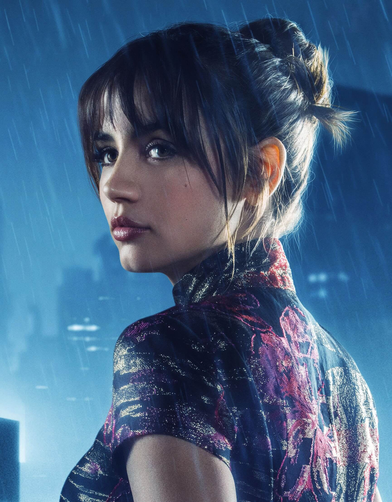

"Officer K" or "Joe"
Played by: Ryan Gosling
KD6-3.7 ("K" for short) is a Nexus-9 replicant model created to obey and works as a "blade runner" for the LAPD, hunting down and "retiring" rogue older model replicants. K is aware he is a replicant, and like the rest of his line, was programmed with implanted memories to aid his mental stability

"Joi"
Played by: Ana de Armas
Joi is an artificial intelligence projected as a hologram, designed and commercially sold by Wallace Corporation to be a fully customizable live-in romantic companion. K, an artificial intelligence himself, has a Joi copy but treats her as a person, and tries to have a real romantic relationship with her, while wondering about how "real" it can truly be given that she is programmed to like him.
"Rick Deckard"
Played by: Harrison Ford
Rick Deckard is a "blade runner", a special agent in the Los Angeles police department employed to hunt down and "retire" replicants. His ID number is B-263-54
"Niander Wallace"
Played by: Jared Leto
Niander Wallace is the sinister CEO and founder of Wallace Corporation, which dominates replicant production in 2049. A genius genetic engineer, his genetically modified crops and livestock solved a global food crisis – which then gave him enough wealth and political clout to lift the ban on replicant production. Wallace bought out the bankrupt Tyrell Corporation.
"Luv"
Played by: Sylvia Hoeks
Luv is a Nexus-9 replicant and personal assistant to Niander Wallace. He entrusts her as his right-hand agent running day-to-day affairs over Wallace Corporation. As KD6-3.7 notes, Wallace was fond enough of her to give her a name (and not just a serial number like he has). She also acts as his personal enforcer, ruthlessly killing police officers in the search for Rachael's child.
"Dr. Ana Stelline"
Played by: Carla Juri
Dr. Ana Stelline is a scientist who designs the implanted memories that Wallace Corporation installs into its new replicants: the replicants are aware that these memories are implants they did not personally experience, but their presence drastically improves their mental stability. Empathetic to how replicants are used as slave-labor, Ana tries to give them pleasant memories to carry with them, even if they know they're artificial.
"Freysa Sadeghpour"
Played by: Hiam Abbass
Freysa Sadeghpour is the leader of the replicant underground. Apparently an older Nexus-8 model, she took care of Rachael's baby after she died in childbirth (K recognizes her in a photo of the baby from around 2022). Freysa helped to hide Rachael's child and erase the records of its past, but is organizing the underground to one day lead another replicant revolt.
"Sapper Morton"
Played by: Dave Bautista
Sapper Morton is an older Nexus-8 replicant, living in seclusion on a protein farm in the industrial outliers of Los Angeles. Despite his large size and strength, he is polite and well-read, collecting antique books. K's encounter to "retire" him starts off the events of the film, as it leads K to discover Rachael's skeletal remains buried on Morton's farm.